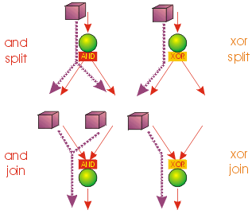

|
Openflow is an activity based workflow management system. Being activity based means that the processes, the workflows, are made of activities to be completed in order to get something done. This differs from entity based workflows where the focus is set on a given document and the states it has to go through in order to be completed.
For example, the process describing a research in your campus library can be handled as an activity based process: you have to get a signed authorization by your teacher, go find your books of interest using either the computer catalogs or the librarian's help, and then check-out the books you need (signing the appropriate stuff). This is a list of activities to be carried out in order to get some books out of the library. There is no main document in this process.
Another example of an activity based process might be represented by the fund request submission process. A teacher of the university has to submit a request for buying a new computer. The process starts by filling in a form where the teacher specifies what he intends to buy and how much this costs. The form will be handled by the administration office and, if the total cost goes beyond a given threshold, it requires the personal authorization by the administration chief. Budget is then checked to see if the teacher has appropriate funds left for the acquisition. In the end an e-mail is sent to the teacher telling him the result of the submission; the request is filed in the request archive and the funding database is updated subtracting the requested cost from the available money left. This process has a main document (the request) but it has a lot of side actions to be carried out as well: signed authorization, archive insertion, database update, e-mail sending. The best way to describe this is through an activity based workflow, where the process is made of activities to be carried out.
On the other hand simpler processes do not require the complex structure of an actvity based workflow management system, and a simple entity-based workflow would suffice. For example the publication of documents on a web site can be simply modelled by the given document going through the states of new, submitted, and then approved or rejected. In such workflows the document is the main issue, and its available actions are defined by its current state.
The main issue for a workflow management system is answering the question "who must do what, when and how". In an activity based workflow management system (as Openflow) this question finds an answer.

The process defining the sequence of activities to be carried out says what should be done and when by the definition of activities and transitions. An activity (the what part of the issue) represents something to be done: giving authorization, updating a database, sending an e-mail, loading a truck, filling a form, printing a document and so on. Transitions define the appropriate sequence of activities for a process (the when part of the issue).
Each activity will have an associated application designed to carry out the job: the how part.
The who part is generally the user assigned to carry out the activity, through its application. Usually activity applications will be used by someone, a person, but in many cases the entity assigned to an activity might be an automatic system. Afterall, why should you have a person waste time updating a database if it can be done in software directly?
One reason to use a workflow management system is to improve the efficiency and performance of the processes you usually handle. A lot of activities you usually do can actually be carried out by an automatic system. Database update, e-mail sending, research, document archiving and so on are activities that a computer can carry out with no need for human intervention. This means that the activity job will be completed much faster and the human resources can be used in some more valuable way (and they will be grateful for that).
Another reason to use a workflow management system is to always have the answer to the question "who must do what, when and how". Formalizing your process means wasting no time in deciding what to do, having each person performing the right job and being sure that your process can be completed appropriately.
The goal of a process definition is to give answer the question "who must do what, when and how". Activities and transitions describe the process you want to model (the what and when part). You can see them as the "bubbles and arrows" description of what has to be done and when.

Applications describe the how part and are associated with activities. Users and roles describe the who part.
Each activity can be of three different kinds: application, sub-process or routing. Usually each activity of the process definition describes something that has do be done, some kind of work. This work can be either carried out by an application or by a sub process definition that better refines the job to be done. Sometimes an activity will be assigned the simple job of handling the routing of work in the process. In this case the activity is just a dummy activity that simply chooses what to do next.
Each activity has one incoming guard for collecting incoming transitions that lead to it. The activity incoming guard can be either set to and or xor for two different behaviour:

Each activity also has one outgoing guard for collecting outgoing transitions getting out of it. Again, the activity outgoing guard can be either set to and or xor for two different behaviours:
Work performed by an activity will be triggered in different ways as determined by the start mode setting of the activity itself. It can be set to either:
When an application completes its job the activity finish mode will be evaluated. It can be set to either:
Transitions connect activities together. A transition connecting activity A with activity B states that as soon as A is finished B has to be started.
Transitions can be guarded by conditions. A transition condition will be evaluated if the "from" activity has choose one and only one path to be followed (ie: the activity has a xor outgoing guard).
An application is assigned to each activity in order to carry out the job the activity has to do. Applications can be anything triggered by an url call: python scripts, dtml forms, sql queries, Zope applications or even external applications like word or other custom and dedicated applications.
What the application is required to do is to invoke the appropriate api for interacting with Openflow. For example the application will need to invoke the Openflow completeWorkitem to signal Openflow that its job is finished and a new activity can be started.
Users are assigned to applications through roles.
The available roles for openflow are the zope-defined roles. To add a role just add a zope role to the folder where you build your application.
One user can be listed in one or more roles. Roles can list one or more activities. Each user will be able to work on all activities listed in roles he is listed in.
Actually each role will keep three different lists:
A process definition gives the instructions for completing some work. A process instance, in turn, is an actual execution of a process definition.
For example, if the process definition describes what should be done for submitting a fund request, a process instance of that process definition is an actual submission for funding.
We call workitem the execution of a single activity of the process definition. Workitems are created every time an activity is triggered. Workitems are never destroyed, even when an activity completes its job, the workitem created to represent the execution of that activity is just set to a complete state. A process instance is a collection of workitems: one per activity executed (or in execution).
One of the most important jobs of a workitem is to keep track of events during the execution of its activity. Since the process instance keeps track of all its workitems, and each workitem keeps track of all the events that happen during the execution of the activity, the complete history of everyting that has happened is recorded in each process instance.
This is very useful for two reasons:
To each user is associated a worklist: a list of workitems pending on activities the user is supposed to perform. The worklist is not set to a given size: it grows when activities require additional work to be done, and it shrinks as the work on activities is completed.
Users are presented their worklists to let them know what is to be done. In Openflow three policies exist for work assignment: pull, manual push and automatic push.
You can see this as having the process instance workitems assigned to users: pulling will be self assignment and pushing will be assignment by somebody else (or by the engine itself).
Whichever policy is used for assigning work, once a user is assigned some work he will be the only one enabled to carry it out: Other users will not see the assigned work in their worklist.
In existing workflow management systems flexibility is a major issue. When you design a process definition there is variable (and usually low) chance the process you defined is actually the most appropriate model you could get of the process.
It is very important to have a way to handle cases that go outside of the set boundary, the "exceptions". At the same time it is also important to have tools that let you change the process definition even while it is running: it can be dramatic having to stop your processes to change their definitions.
Exception handling is necessary for unforeseen situations when users have to handle something that the process was not designed to handle.
Instead of a normal handling of a workitem the user can make it "fall out" of the normal process flow. The fallen (exceptional) token will then be available to any user assigned to handle exceptions. As soon as the workitem is fixed, it can be inserted into any activity of the process to resume the process flow. In this way the user can change the workitem data anyway he wants, to adjust to the exceptional situation.
A process definition can be changed while in execution (while process instances run the flow). New activities can be added, old ones deleted, transition created or changed and so on. Any invalidating situation that might occur will be handled, causing the appropriate workitem to fall out (go into exceptional state).
As soon as the process is changed all the current process instances will read the new process definition as the definition to be used.
Dynamic redesign and exception handling are related to each other. Exception handling allows for dealing with unforeseen events: it should suggest changes in the process definition to handle that situation in the future. On the other hand dynamic redesign will probably put some (or all) process instances into an invalid state: exception handling should be used to recover from these situations.
| Last edited 2004/09/24 11:43:25.300 GMT+2 | Edit this page |